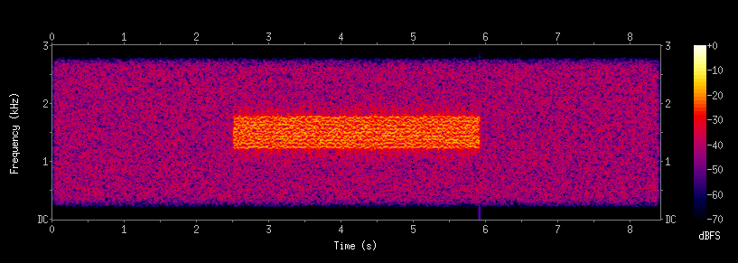

On the air
What NeoAPRS sounds like
NeoAPRS sends three kinds of signal. Listen to each one here and see what it looks like on a waterfall.
Every clip is one position beacon, with a few seconds of receiver noise before and after. The pictures share one scale: time runs to the right, audio from 0 to 3 kHz upwards.
Mercury

- Sound: a steady hiss, 3.4 seconds long. Every Mercury transmission has this length.
- Waterfall: a solid block about 560 Hz wide, between 1.2 and 1.8 kHz.
- Where: on HF, on the suggested dials, for example 14.1070 MHz USB.
Packet at 1200 baud

- Sound: a short, harsh burst, usually under a second. On an FM receiver the hiss drops away while it lasts.
- Waterfall: two tones, at 1200 and 2200 Hz.
- Where: on VHF, for example 144.800 MHz.
Packet at 300 baud

- Sound: a warble of two close tones, one to two seconds long.
- Waterfall: a narrow stripe around 1600 and 1800 Hz.
- Where: on HF, usually 10.1476 MHz USB.
What you need to receive them
| Mercury | A Mercury radio. Only Mercury hears Mercury. |
|---|---|
| Packet at 1200 baud | A Packet radio at 1200 baud: a sound card or a KISS TNC. |
| Packet at 300 baud | A Packet radio at 300 baud: a sound card, or a KISS TNC with On HF ticked. |
The clips were made with the Mercury and Direwolf modems NeoAPRS uses. The noise was added.